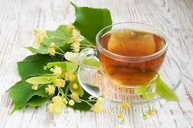

Çaji i malit shqiptar të humbet mendjen me aromën unike, të përfshin në nostalgjinë e kohëve të kaluara dhe të ringjall ndjesitë e plota të shijes. Çaji i malit ndihmon me shëndetin e aparatit tretës dhe përmban antioksidantë natyralë. Eshte plot me flavonoidë dhe antioksidantë. Ul tensionin e gjakut. Një studim i fundit zbuloi se ekstraktet që vinin nga kjo familje e bimëve ulnin nivelet e tensionit të gjakut dhe qetësonin enët e gjakut. Studimi i kryer ka nxjerrë në pah se doza domethënëse të ekstrakteve në fjalë ndihmonin në zgjerimin e enëve të gjakut. Gjithashtu në uljen e tensionit të gjakut dhe uljen e presionit ndaj zemrës. Mbron sistemin tretës. Per te pare produktet tona kliko ketu.
Çaji bliri Lufton ankthin. Një nga përdorimet më të gjera të çajit të lules së blirit është kundër ankthit. Ky çaj ka aftësi qetësuese kundër stresit mendor. Antioksidantët që gjenden tek bliri shërbejnë si luftëtarë kundër radikaleve të lira, duke i larguar ato dhe përmirësuar shëndetin tonë të përgjithshëm. E gjithë kjo parandalon sëmundjet kronike. Pastron organizmin. Përbërësit dhe acidet që gjenden tek bliri çlirohen menjëherë në çaj duke nxitur djersitjen. Kjo është një mënyrë shumë e mirë për të larguar toksinat nga trupi. Së bashku me kripërat e tepërta, yndyrnat, ujin dhe substancat e huaja. Këto cilësi e bëjnë blirin shumë të çmuar në rastet e sëmundjeve me temperaturë të lartë, pasi e ul atë. Ata që vuajnë nga dhimbjet e kokës, të shkaktuara nga tensioni dhe simptoma të tjera të inflamacionit duhet të konsumojnë çaj bliri dhe të eleminojnë dhimbjet nga artriti apo simptoma të tjera. Siç largon problemet nga rrugët e frymëmarrjes, ashtu ul tensionin e gjakut duke parandaluar një sërë problemesh përfshirë dhimbjet e kokës. Përmirëson tretjen. Nëse keni stomak të lënduar, fryrje apo shtrëngime, atëherë mos i kurseni vetes një filxhan me çaj bliri sepse do të ndiheni mirë menjëherë. Per te pare produktet tona kliko ketu.
Çaji i hithres përmban shumë minerale të shëndetshme përfshirë kalciumin, magnezin dhe hekurin. Kjo e bën këtë çaj,të jashtëzakonshëm për njerëzit që vuajnë nga anemia, por edhe për parandalimin e sëmundjes që gërryen kockat me kalimin e moshës. Hithra është veçanërisht e pasur me kalcium dhe magnez, madje më shumë se barishtet dhe zarzavatet e tjera. Flavonoidët dhe karotenoidët që gjenden tek çaji i hithrës, së bashku me sasinë e lartë të vitaminës C, i japin kësaj pijeje efikasitet të plotë në lidhje me fuqizimin e sistemit imunitar.Çaji i hithrës arrin të ulë dhimbjet, qetësojë alergjitë, përmirësojë sistemin imunitar, mbrojë zemrën, përmirësojë tretjen, largojë inflamacionin dhe shërojë problemet me lëkurën. Per te pare produktet tona kliko ketu.